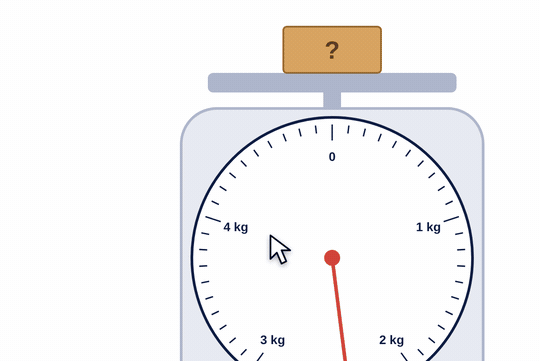
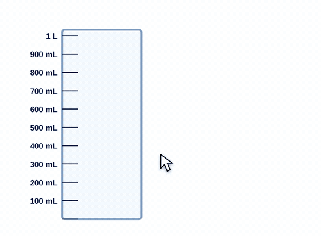

The big idea
A scale is a number line. On a dial, the line is bent into a curve.
Reading one means working out what each small mark is worth. Students often assume every mark is 1. It almost never is.
Finding what a mark is worth
- Find two labeled numbers next to each other.
- Subtract: how far apart are they?
- Count the spaces between them, not the lines.
- Divide. That's the value of one mark. Count up from the lower label.
This works on every scale, beaker, cup, ruler and thermometer.
How to use the tools
Scale & Balance
- Drag the box onto the scale. Read where the red pointer stops.
- Balance: drag weights onto the right pan until both pans are level. Level means equal.

Beakers & Cups
- Drag up or down in a beaker to fill it.
- Read the mark at the top of the water, at eye level.
- Drag the yellow handle over another beaker to pour.

Facts to have handy
1 kg = 1,000 g1 L = 1,000 mL1 lb = 16 oz2 cups = 1 pint2 pints = 1 quart4 quarts = 1 gallon
Try this with your class
A beaker is marked 0, 200, 400, 600 mL with one small mark between each. The water is at the small mark just above 400. How much water?
- 400 to 600 is 200 mL. There are 2 spaces.
- Each mark is 100 mL.
- The water is at 500 mL. How much more makes 1 liter? 500 mL.
Watch for
Every mark is 1.Ask: what is each small mark worth here? How do you know?
Counting lines, not spaces.5 spaces have 6 lines, counting both ends.
No unit."260" isn't an answer. 260 grams is.
Balance backwards.The heavier side goes down.
Try it yourself
Based on: Oak National Academy, scales with different intervals · Oak National Academy, measuring in litres and millilitres.